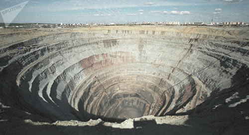

Real Chubut - Agencia de Noticias


El medio Ruso Sputnik muestra como mineras se llevaron en 40 años en México el doble de oro que España se llevo se América en la época colonización

En México hay 800 proyectos mineros que ocupan al menos un 18% del territorio total del país. El 75% de las empresas son canadienses. Sputnik te muestra la realidad de un negocio extractivista que afecta a la sociedad mexicana.
Sólo entre los años 2001 y 2007, la minería transnacional extrajo de México el equivalente a el doble del oro y la mitad de la plata que los españoles se llevaron de México durante los 300 años que duró la Colonia española, según aparece referenciado en el trabajo del periodista Jesús Lemus, en su libro "México a cielo abierto", publicado a principios de este año.
Ese crecimiento exponencial estuvo dado por la promoción que los gobiernos de los tres países norteamericanos le dieron en la firma del Tratado de Libre Comercio que entró en vigencia el 1 de enero de 1994.
"Con el TLCAN se hizo una ley, que es casi la misma que en toda América Latina, que les dio a las empresas mineras una permisividad abierta y una preferencia sobre cualquier otra actividad productiva", explicó a Sputnik, Ivette Lacaba, activista antiminera mexicana.
Desde entonces, se han otorgado:
- 22.000 títulos de concesión
- para 800 proyectos mineros
- que ocupan entre un 16 y un 18% de la superficie total del país
- el 75% de las empresas del rubro son de origen canadiense.
"Hay documentos que manejan que la superficie que ocupan representa el 25% del territorio pero es un poco exagerado.
De todos modos, 18% ya es bastante", sostuvo. Lacaba explicó a Sputnik que el crecimiento se dio de la mano del cambio del formato de explotación, que dejó atrás las viejas minas de túneles o socavón, para pasar a las minas a cielo abierto, cuyo método de explotación consiste en dinamitar el terreno y abrir un cráter o "tajo" de dónde se extrae el material en concentraciones bajas.
"Se está extrayendo mucho oro y plata, pero de minas agotadas por la época de la colonia y donde se exprime el material de la roca. Hay más proyectos que abarcan más territorio, porque la mina por túnel no es lo mismo que la mina a cielo abierto, que tiene un impacto ambiental muchísimo más fuerte, porque utilizan mucha agua y cianuro o mercurio para lixiviar el oro y la plata", explicó.
El lixiaviado es un proceso químico y altamente tóxico por medio del que se separa el material de la roca que lo contiene. Este tipo de minería se caracteriza por remover toneladas de tierra para extraer cantidades bajas de mineral.
"En varios documentos se señala que en estos años se ha extraído más mineral que durante la Colonia, cosa que puede ser cierta por las características de la explotación. Sin embargo, no lo sabemos con certeza, porque no hay nadie que controle cuánto material sacan las empresas ahora", señaló.
Lacaba explicó que el mecanismo establecido en México para el control de las empresas mineras, depende de lo que declaren haber obtenido del subsuelo y en base a eso, se les calcula cuánto dinero deben pagar por la riqueza que se llevan.
Sin embargo, no hay ningún control de que las empresas efectivamente extraigan lo que declaran. "No hay quien mida cuánto sacan, ni sabemos si están extrayendo más de lo que reportan y eso que lo reportado es muchísimo", agregó.
Lacaba explicó a Sputnik que a partir del año 2014, se gravó la actividad con un impuesto del 7,5% sobre el material extraído, del que las empresas puedan deducir sus gastos de operación, por lo que el pago no es realmente muy elevado. También pagan derecho al agua y uso de suelo, que equivale a unos 50 pesos mexicanos (menos de 3 dólares) por hectárea, cada 6 meses.
"Nosotros decimos que es un saqueo a cielo abierto porque es tan barato sacarlo que se les hace costeable obtener 0,4 ó 0,3 gramos de material por tonelada de roca que dinamitan". sostuvo. El 75% de las empresas a cargo de los 800 proyectos mineros en México son canadienses.
"Desde la sociedad civil hemos remarcado que esto tiene que modificarse en el Tratado de Libre Comercio, que tienen que respetarse las normas ambientales y el proceso de consulta a los pueblos, que no es vinculante, cuando debería serlo", añadió.
La asunción de López Obrador como futuro presidente de México abría una puerta para buscar modificaciones a esta situación, explicó Lacaba. Sin embargo, las declaraciones hechas por Alfonso Romo, futuro coordinador de presidencia de López Obrador, prometiendo que México será "un paraíso para la inversión privada", desalentó a los activistas antimineros en el país.
"Hemos hablado con académicos y grupos ambientales en Canadá y Estados Unidos que nos apoyan, pero a los gobiernos no les importa, tampoco al de México. Con AMLO pensamos que se podría interceder, pero cuando vino la canciller canadiense [Chrystia Freeland] el discurso que mantuvo fue invitarlos a seguir invirtiendo", concluyó.
Fuente: Sputnik News